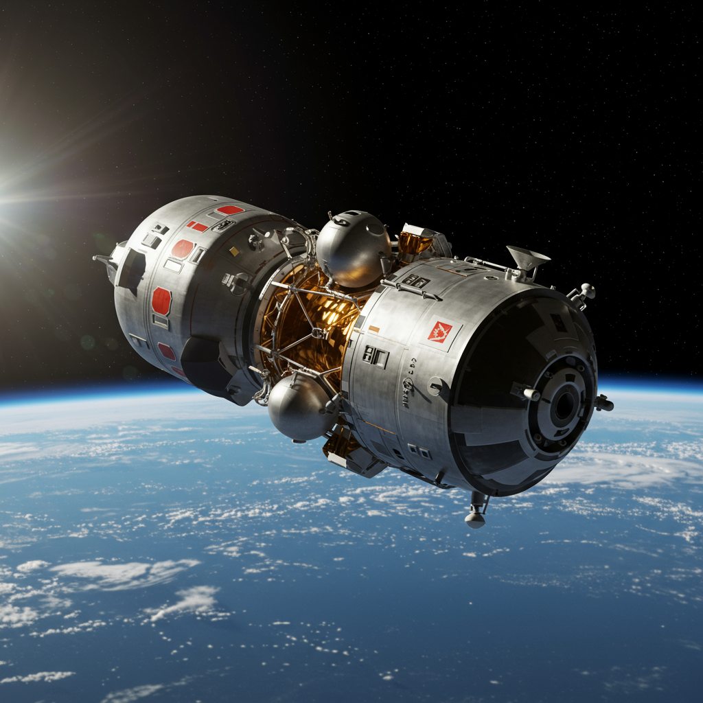
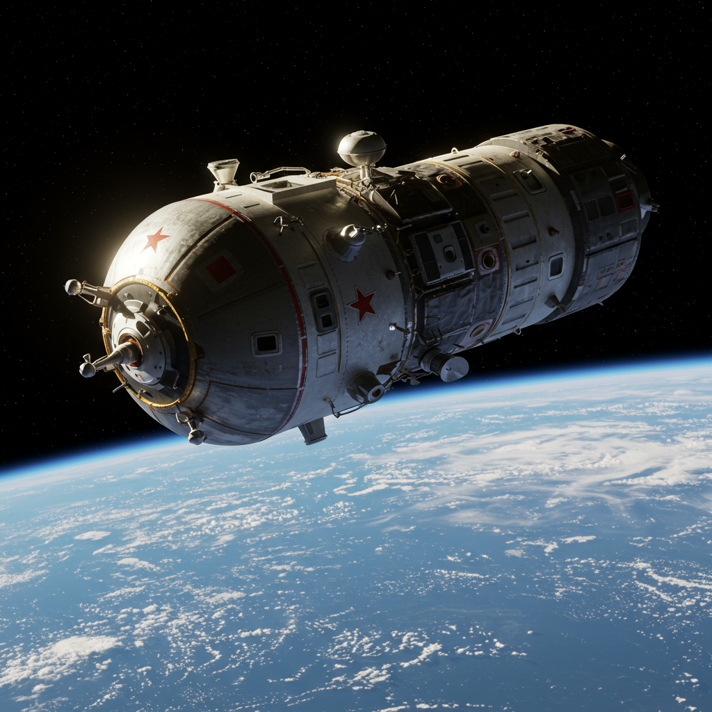

Misiones Vostok
(URSS) – 1961 a 1963
Vostok 1 (1961) – Yuri Gagarin
Primer ser humano en el espacio. Objetivo: demostrar que el hombre podía sobrevivir y operar en condiciones de ingravidez.
Vostok 2 (1961) – Guerman Titov
Primer vuelo espacial de más de 24 horas. Objetivo: estudiar los efectos fisiológicos y psicológicos de la permanencia prolongada en el espacio.
Vostok 3 (1962) – Andrián Nikoláyev
Primera vez que dos naves coincidieron en órbita. Objetivo: evaluar operaciones conjuntas y vuelos simultáneos.
Vostok 4 (1962) – Pável Popóvich
Vuelo conjunto con Vostok 3. Objetivo: establecer comunicación y coordinación entre dos cosmonautas en órbita.
Vostok 5 (1963) – Valeri Bykovski
Récord de vuelo prolongado en solitario (casi 5 días). Objetivo: medir resistencia humana a la soledad en el espacio.

Vostok 6 (1963) – Valentina Tereshkova
Primera mujer en el espacio. Objetivo: verificar la adaptación fisiológica femenina en misiones espaciales.